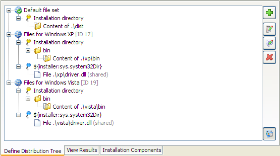
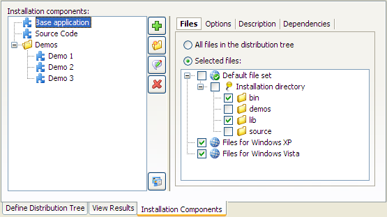

File Sets and Installation Components


File Sets and Installation Components |
|
Both file sets and installation components are optional concepts that can be ignored if they are not required for an installer project: There is always a "Default file set" to which you can add files in the distribution tree and on the installation components tab you do not have to add any components.
File sets are a way to group files in the distribution tree. When you need to select files in other parts of the install4j IDE, you can select the file set node instead of selecting single files and directories. Each file set has a special "Installation directory" child node that maps to the installation directory selected by the user at run time. Custom installation roots are defined separately for different file sets. If you require the same installation root in two different file sets, you simply define the same root twice.

The installation of file sets can be toggled programmatically at run time.
The code snippet to disable the installation of a file set at run time is
context.getFileSetById("123").setSelected(false);
if the ID of the file set is "123". You could insert this snippet into a "Run script"
action that is placed before the "Install files" action on the
screens & actions tab.
File set IDs are displayed when the "Show IDs" toggle button in the lower right
corner of the distribution tree is selected.
A common use case is to exclude platform-specific files from certain media files. You can define file sets for different platforms and exclude all unneeded file sets in the media wizard. This is an example of how to use file sets at design time in the install4j IDE.
Within one file set, all relative paths must be unique. However, the same relative path can be present in different file sets. Suppose you have different DLL files for Windows XP and Windows Vista. You can create two file sets so that the installer contains both alternative versions. Once you find out whether you run on Windows XP or on Windows Vista, you can disable the file set that should not be installed with the code snippet shown above. By default, all included file sets are installed. If the same relative path occurs twice, it is undefined which version is used. In this case you have to make sure to disable the file sets that are not appropriate.
If you define installation components. the installer can ask the user which components should be installed. In the configuration of an installation component you mark the files that are required for this component. A single file or directory can be required by multiple installation components.

Installation components are defined in a folder hierarchy. This means you can have groups of installation components that are enabled or disabled with a single click. Most options in the configuration of an installation component are used by the "Installation components" screen. They decide how the installation component is presented to the user, whether it should be initially selected or mandatory, and if it has dependencies on other installation components that should be automatically selected.
Another important feature of installation components is that they can be marked as "downloadable". If you configure the download option in the media wizard, separate data files will be created for the downloadable components.
install4j also offers a two-step selection for installation components: In the first step, the user is asked for the desired "installation type". An installation type is a certain selection of installation components. Typical installation type sets are [Full, Minimum, Customize] or [Server, Client, All]. The display and the configuration of installation types is handled by the "Installation type" screen. For each configured installation type, you can decide whether the user should be able to further customize the associated installation component selection in the "Installation components" screen or not.
|
|